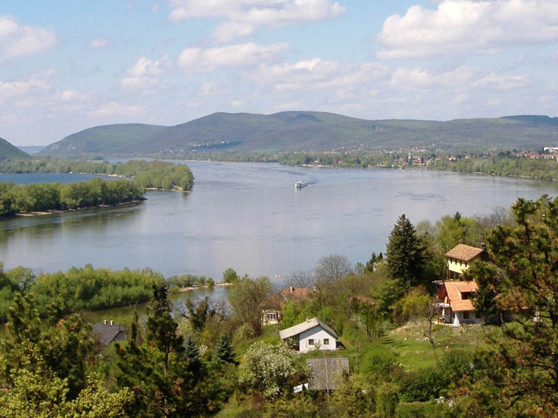

-

-
Zebegény
- Séta a Kálvária dombra
- Dunai panoráma és fényképezés a kilátóból
- Duna-parti kavicsdobálás
-
Nagybörzsöny

- Különleges lekvárok kóstolása és vására - lekvar-lak.hu
- Ebéd a Malomkert étteremben - borzsonyhotel.hu
- Vízimalom megtekintése idegenvezetéssel
-
Kemence

- Ismerkedés az Erdei Múzeumvasúttal - kisvasut.hu/kemence
- Kisvonatozás a Csarna-patak völgyében
- Vacsora a Feketevölgy Panzióban - feketevolgy.hu
Útvunalunk térképe:

Indulás:
- gyülekező reggel 700-tól, indulás 715-kor az iskola parkolójából
Várható hazaérkezés:
- este 10 óra körül
Jelentkezés:
- Mókus Örsnél telefonon, vagy e-mailben